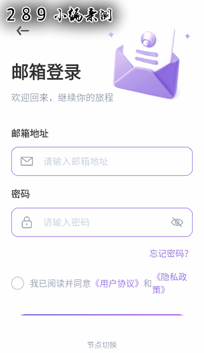

Mira 到底是什么？一份给新手的快问快答
Mira 是一款 AI 角色聊天应用，角色广场几百张卡随便挑，也能自建专属角色。整理了九个新手最常问的问题，看完就能上手。
最近有朋友问我 Mira 到底是个什么东西，问得还挺具体——"能不能离线用""自建角色要不要写很复杂的设定""语音输入准不准"。索性整理一篇快问快答，把新人最可能卡壳的点一次性说透。
Mira 是什么？一句话概括
Mira 是一款 AI 角色聊天应用。你可以把它理解成一个"AI 角色广场"——里面有几百张预设好的角色卡，从校园同学到毒舌上司，从邻家姐姐到咖啡店店员，挑一张就能直接开聊。不想用现成的？自己创建一个也行，名字、性格、背景故事全由你写。
和一般的 AI 聊天机器人不同，Mira 把"角色"这件事做得很细。每个角色都有独立的人设和语气，不会聊到一半突然跳戏说些不符合身份的话。
谁适合用 Mira？
想和 AI 聊天但又不想总是同一个风格的人。 普通的 AI 助手永远是那副中性的、公事公办的腔调，Mira 的核心就是"换角色 = 换人格"。适合的场景大概这几类：
- 想模拟和不同性格的人对话，练沟通或者单纯打发时间
- 喜欢角色扮演类的互动，又嫌专门的 RPG 游戏太重
- 想自己写角色设定，看 AI 能不能按你写的人设说话
- 通勤路上、睡前这种碎片时间，随便挑个角色聊两句
说穿了就是——你觉得和同一个 AI 聊腻了，想换个"人"聊聊，Mira 就是干这个的。

怎么下载安装？
Mira 是手机端 App，官方下载入口可以直接拿安装包，手机自带的应用商店也能搜到。如果商店里没搜到，可以去它的Mira官网找。安装过程和普通 App 没区别，点几下就完事了。
有一点要提醒：不同渠道拿到的版本功能可能有差异，尤其是"语音回复"这种功能，有的版本有有的版本没有，以你手上实际跑起来的为准。
角色广场怎么挑到合适的？
角色广场的角色卡有几百张，翻着翻着容易看花眼。两个技巧：
按分类翻。广场首页一般会有分类标签，比如校园、职场、邻居、陌生人之类的，先挑你感兴趣的分类进去看，比在全量里瞎翻效率高。
用搜索。广场顶部有搜索栏，知道角色名直接搜名字；不知道名字但有大致方向的，搜关键词——比如搜"大学室友 毒舌"，比只搜"同学"精准得多。关键词越具体，结果越靠谱。
搜不到也别死磕，广场的搜索索引不一定是实时全量的。翻分类、或者干脆自己建一个，都是正常路径。

自建角色难不难？背景故事要写很多吗？
不难，背景故事不写也行——但写了角色会立体很多。
背景故事就是两三句话的事，比如"你是我的大学同班同学，叫林凉，认识两年了，最近在准备考研"，就这么点字，AI 立刻就知道该用什么身份和你说话。加上背景故事的角色和没加的，聊起来是两种完全不同的质感——前者像个有来历的人，后者像个没根的灵魂。
建议至少写一句话，哪怕"你是我的高中同桌"也比完全空白好。反正随时可以回去改，改完下次开聊新设定就生效了。关于背景故事和性格描述怎么搭配更出彩，Mira文档里有专门的说明。
语音输入好用吗？
好用，但看场景。
第一次用要给麦克风授权，允许之后就不用每次重复了。切换到语音模式，按住说话松开自动转成文字发出去——发出去的是文字不是语音消息，对方（角色）收到的还是文字，回复也还是文字。这和微信发语音不是一回事，它只是换了一种输入方式。
转文字的准确度主要看普通话标不标准、环境吵不吵、说话快不快。地铁里、咖啡厅这种嘈杂环境，识别率会降不少。转完如果有错别字，有些版本可以在发送前手动改一下。
适合的场景：通勤路上不想打字、手里有东西腾不开手、或者单纯想换个输入方式模拟真人聊天的感觉。
断网了还能用吗？
界面能打开，但AI 不会回复你。
这是 Mira 这类应用的通病——核心的 AI 回复要靠服务器跑模型，你发一条消息，手机要把消息加上历史对话和角色人设一起送到服务器，服务器跑完再把回复发回来，全程离不开网络。断网时消息会卡在"发送中"或者直接弹网络异常。
流量不用担心，每次回复就是一段文本，正常聊一晚也就几十到一百多 MB，比刷短视频省多了。
信号差的地方回复变慢，别先急着骂模型——先查下 WiFi 或移动数据是不是真的通，很多时候是网络的锅。
有没有什么坑要提前知道？
有几个新人容易踩的：
别把搜索当唯一路径。搜不到不等于广场上没有，索引不是实时全量的。翻分类或者自建角色都比死磕搜索靠谱。
修改背景故事只影响新会话。已经开着的会话不会因为你改了人设就跟着变，这是设计行为不是 bug。
信号差别用高消耗模型。质感型模型本身回复就慢，叠加弱网体验会很差，切到轻量模型凑合一下。
公共 WiFi 注意安全。虽然聊天内容本身没什么风险，但基本的网络安全意识还是要有。
和同类 App 比，Mira 好在哪？
实话说这类应用现在不少，但 Mira 有两个地方做得比较扎实：
一是角色广场的标签体系比较完整，分类多、关键词匹配准，想找特定类型的角色不费劲；二是自建角色的字段设计合理——背景故事、性格描述这些分开写，不用一上来就吐一大段 prompt，对新手友好。
不好的地方也有：依赖网络（不能离线用）、不同渠道版本功能有差异、偶尔服务器繁忙回复会变慢。这些问题同类 App 大多也有，不算 Mira 独有的硬伤。
最后一句
值得装。角色广场几百张卡够你翻一阵，自建角色又给了想自己动手的人足够的空间，碎片时间拿出来聊两句完全没问题。别指望它能替你解决什么严肃问题，就当是个有各种人格的 AI 陪聊——这个定位上它做得挺到位。
上面提到的这些参考资料，在 GitHub、Gitee、GitCode 都能找到同一份：GitHub 主仓库、Gitee 国内镜像、GitCode 备用备份，三端同步维护哪个顺手用哪个。